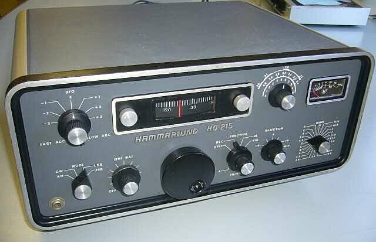
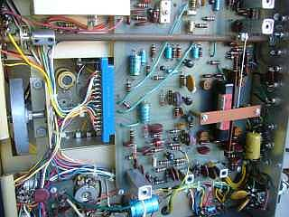
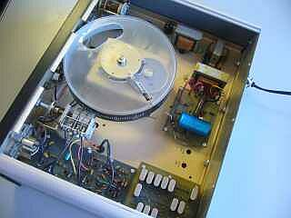
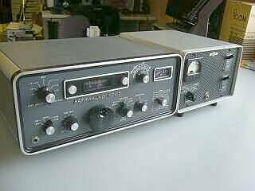

 |
ＵＳ ハマーランド社の６０年代後半の製品
当局が開局した時期の新製品です
国内では、真空管全盛、まだＡＭが主体だった時代に出てきたＳＳＢ／ＣＷ（もちろんＡＭも）オールソリッドステートのアマチュア無線用受信機です（当時、間違いなく最先端！）
多分ですが、ハマーランド製品としても最後の製品ではなかったかと思います
入手後、破損箇所の補修のみ行ったもので、細かい調整等はしていませんが、それなりに動作しているところはさすがです
アルミ・シャーシに、ガラスエポキシ基板、古い無線機を入手するにあたっての私の最低条件です（この時点で、国産は外れます！） |
 |
左に、メインダイヤル用のフライホイールが見えます
糸かけダイヤルですが、１回転で約１０ＫＨｚ、１ＫＨｚ直読と、使い勝手、ダイヤルタッチとも悪くありません
右には、あのＣｏｌｌｉｎｓメカニカルフィルタ（Ｆ４５５ＦＡ２１）が見えます
横に長いベーク棒は、メカフィル切替用のものです
ＣＷ用に可変ＢＦＯとリジェクション（ＬＣ）が搭載されています（メカフィルは、ＡＭ用ともオプション）
シャーシ類は、厚手の硬質アルミで頑強です
本機は、Ｃｏｌｌｉｎｓ Ｓラインと同じ周波数構成ですから、例えば３２Ｓとトランシーブできます（ＶＦＯ以外にヘテロＯＳＣの出力もあります）
７５Ｓのソリッドステート版（最新版）を狙ったのかも知れません、ケースサイズは、全く同じようです（世代交代の時期だったのかも！ 新世代＝＞Ｃｏｌｌｉｎｓ） |
|
|
 |
大きな円柱（円盤）状のものが周波数表示目盛りです
２００ＫＨｚをこの円周で表現します（１ＫＨｚが目盛り幅３ｍｍ程度で直読）
メインダイヤルとの接続は、糸かけ
ＶＣ（バリコン）の接続は、ギアメカです
ＣＷ－ＢＦＯのＶＣは金メッキが施してあります
上２つのトランスは、オーディオ用（ちゃんと６００Ω出力があります！）で、その下にあるトランスが電源トランスです
ＤＣ１２Ｖ動作もＯＫ（外部ＤＣ１２Ｖ入力可）
右下の水晶群・・・２００ＫＨｚ単位で拡張が可能
２４バンドの用意があります（７５Ｓ３Ｃは、１３バンドｘ２の２６バンド） |
|
|
 Collins 312B-4 と 2014.05 |
Ｃｏｌｌｉｎｓ Ｓラインと近いデザインに仕上げてあり、こうして並べてみても違和感はありません
先に記述した周波数関係を含め、７５Ｓ３（受信機）の後釜を狙った感があります
サイズも、横幅が僅かに大きいくらい
この先、３２Ｓ３（送信機）を入手して、トランシーブ運用をしてみようという気になります（悪い病気が！！！）
アナログＶＦＯ安定度の現代化？については、またＸ－Ｌｏｃｋ手法に頼ろうと準備しています
実用に向けた取り組みは → こちら |
| 2014.06 ＪＡ４ＦＵＱ |
余談ながら
アナログ全盛期、いえアナログ技術しかなかったと言ってもいい時期の製品ですが、構造的にとても良くできています（いわゆる基本に忠実！）
デジタル技術であれば簡単に済むところを、手をかけて実用レベルにしてあります（ＶＦＯの安定度や周波数直読の構造など）
ノイズ、混変調や外部抑圧にどれだけ耐えるとか、ルーフィングフィルタの効能がどうだとかに触れなければ、今でも十分実用になりそうです（そんな厳しい受信状況の時は、諦める！ そこはアマチュア無線ですから、次の機会を待ちましょう！ そうは行かないと言う方が多いのも、やはりアマチュア無線！）
こと聞こえると言うことに関しては、他の機種の項でも書いていますが、最新のマシンに劣りません
不思議と言えばそうですが、意外と基本的なことの進化はないのかも！？
最後は、人間の耳に頼っているのかな？？？
|
Ｃｏｌｌｉｎｓ７５Ｓ用ＡＭメカニカル・フィルタが、入手できたので組み込みました
国際のメカ・フィルには、苦労しているお話を良く耳にしますが（分解してアルコール洗浄した等）、Ｃｏｌｌｉｎｓ製では、今のところ何も不具合を感じていません
余談ですが、糸掛けダイヤルの面白いというか、仕方ない動きなのかも知れませんが、ダイヤルを止めると、ほんの僅かですが戻ります
糸をスプリングで引っ張ってある・・・・チューニング／ダイヤル合わせに、少しだけ？コツがあります
この点、ギアダイヤルは落ち着いていますね |
| 2016.08 |